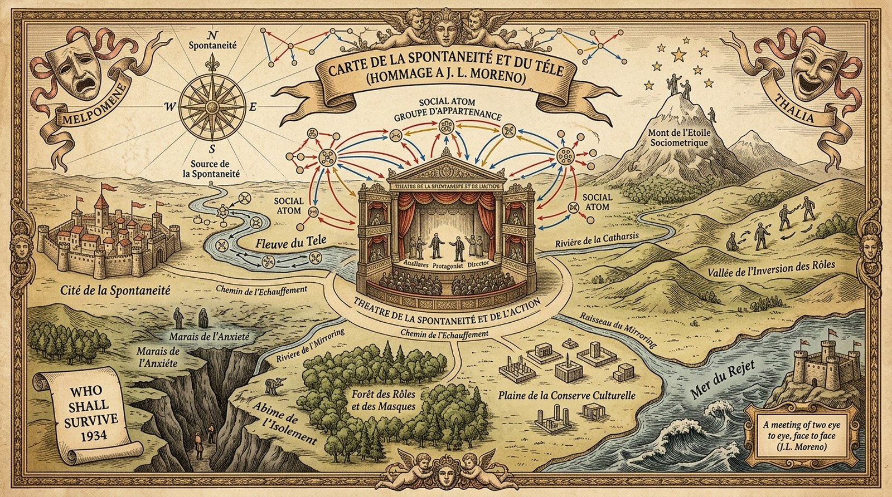
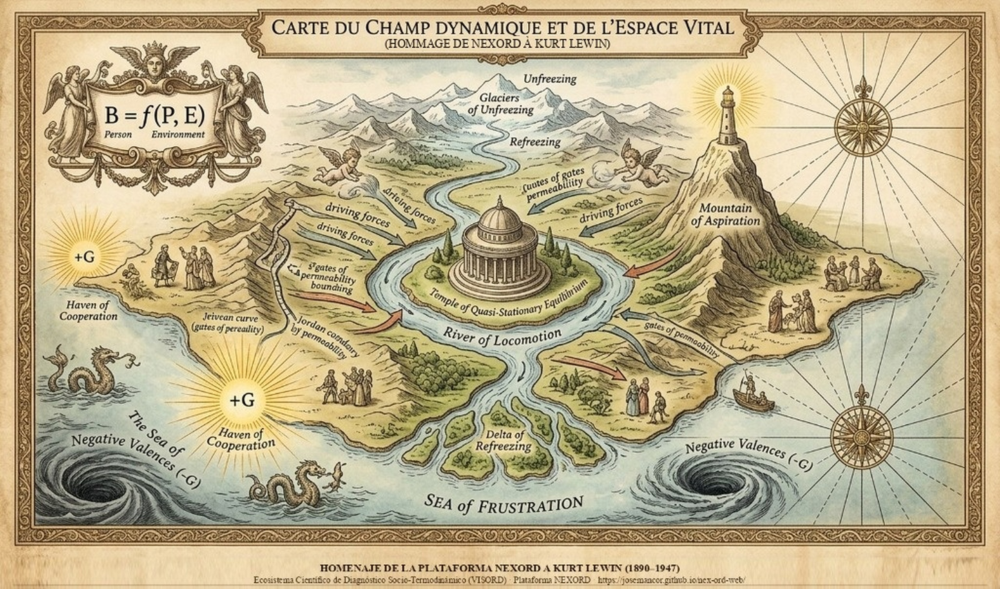

Jacob Levy Moreno concibió en 1934 el sociograma como la cartografía de las atracciones y repulsiones interpersonales; Kurt Lewin formuló en 1951 la teoría de campo, postulando que la conducta individual es función del espacio vital y de las fuerzas del grupo: B = f(P, E).
Ambos pioneros colisionaron con el límite analógico de su tiempo: el dibujo manual de sociogramas colapsaba para N > 10, y la falta de capacidad computacional forzó a la sociometría tradicional a reducir el vínculo a un corsé binario plano (1 / 0), amputando la intensidad, el orden de preferencia y la dimensión cognitiva del campo.
"NEXORD rescata y consuma esta herencia histórica: sustituye la red plana y estática por un campo continuo multidimensional computable."
Cartes du Tendre: Los Orígenes de la Cartografía Vincular
Moreno y Lewin tradujeron a la ciencia psicosocial la aspiración cartográfica de Madeleine de Scudéry (1654), transformando la alegoría moral en topología relacional objetiva:

J.L. Moreno (1934): El sociograma originario y la estructura del átomo relacional.

Kurt Lewin (1951): El espacio hodológico y las fuerzas del campo dinámico.
Cuadro Sinóptico Genealógico
| Dimensión |
Moreno (1934) |
Lewin (1951) |
NEXORD |
| Unidad de Análisis |
Vínculo bilateral atómico |
Espacio vital y campo de fuerzas |
Celda tetraádica SMIb (Q81) |
| Formato del Dato |
Binario discreto (1 / 0) |
Cualitativo / Topológico |
Ordinal forzado W(k) = 21-k |
| Topología |
Sociograma plano sobre papel |
Regiones hodológicas |
Variedades de Grassmann Gr(k, N) |
| Dimensión Temporal |
Estática (foto fija) |
Cinemática teórica |
Moviola 3D/4D de fases |